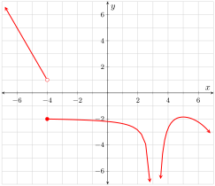

For Exercises 2.14.1–5, state the limit suggested by the values in the table and state whether or not the limit exists. The correct answer for Exercise 2.14.1 has been given to help you understand the instructions.
\(\lim\limits_{t\to-\infty}\fe{g}{t}=\infty\text{;}\)\(\lim\limits_{t\to-\infty}\fe{g}{t}\) does not exist.
Solution.
The relevant pattern in the \(y\) column is that \(y\) appears to be positive and growing by a little more than a factor of \(10\) every time \(t\) is negative and grows by a factor of \(10\text{.}\) It’s not guaranteed, but this suggest that \(\lim\limits_{t\to-\infty}\fe{g}{t}=\infty\text{.}\) In this circumstance, we say that \(\lim\limits_{t\to-\infty}\fe{g}{t}\) does not exist.
The relevant pattern in the \(y\) column is the powers of \(10\text{.}\) The first nonzero digit is moving farther and farther to the right of the decimal point. So the \(y\)-values are approaching zero. This suggest that \(\lim\limits_{x\to\infty}\fe{f}{x}=0\text{.}\) So \(\lim\limits_{x\to\infty}\fe{f}{x}\) exists.
You should definitely recognize decimals approaching common fractions. Good catch if you noted the \(t\) was approaching \(\frac{1}{3}\) only from the left. The suggested limit is \(\lim\limits_{t\to\frac{1}{3}^{-}}\fe{z}{t}=\frac{2}{3}\text{,}\) and this (one-sided) limit exists.
Stay focused when determining “from the left” or “from the right”; that can get tricky…especially when the numbers are negative. The limit suggested here is \(\lim\limits_{\theta\to-1^{+}}\fe{g}{\theta}=3{,}000{,}000\text{.}\) So this limit exists.
5.
\(t\)
\(\fe{T}{t}\)
\(0.778\)
\(29{,}990\)
\(0.7778\)
\(299{,}999\)
\(0.77778\)
\(2{,}999{,}999.9\)
Answer.
\(\lim\limits_{t\to\frac{7}{9}^{+}}\fe{T}{t}=\infty\text{;}\)\(\lim\limits_{t\to\frac{7}{9}^{+}}\fe{T}{t}\) does not exist.
Solution.
The last entry in the output column is the same in the previous exercise. Hopefully you recognized that you need to look at the pattern in the output, not just the last entry. Recognizing that \(t\) approaches \(\frac{7}{9}\) might requires some guessing and checking. The limit suggested here is \(\lim\limits_{t\to\frac{7}{9}^{+}}\fe{T}{t}=\infty\text{.}\) So we say that this limit does not exist.
6.
Sketch onto Figure 2.14.1 a function, \(f\text{,}\) with the following properties. Your graph should include all of the features addressed in lab.
The only discontinuities on \(f\) are at \(-4\) and \(3\text{.}\)\(f\) has no \(x\)-intercepts. \(f\) is continuous from the right at \(-4\text{.}\)\(f\) has constant slope \(-2\) over \(\ointerval{-\infty}{-4}\text{.}\)
Figure2.14.1.\(y=\fe{f}{x}\)
Answer.

Solution.
7.
Sketch onto Figure 2.14.2 a function, \(f\text{,}\) with each of the properties stated below. Assume that there are no intercepts or discontinuities other than those directly implied by the given properties. Make sure that your graph includes all of the relevant features addressed in lab.
Determine all of the values of \(x\) where the function \(f\) (given below) has discontinuities. At each value where \(f\) has a discontinuity, determine if \(f\) is continuous from either the right or left at \(x\) and also state whether or not the discontinuity is removable.
Discontinuities at \(0,3,4\text{,}\) and \(2\pi\text{.}\) Continuous from the left at \(3\text{.}\) Removable discontinuities at \(4\) and \(2\pi\text{.}\)
Solution.
\(f\) is discontinuous from both directions at \(0\) and the discontinuity is not removable. \(f\) is discontinuous at \(3\) although it is continuous from the left at \(3\text{.}\) The discontinuity is not removable. (The problem is that the limits are different from the left and right of \(3\text{.}\)) \(f\) is discontinuous from both directions at \(4\) but the discontinuity is removable (\(\lim\limits_{x\to4}\fe{f}{x}=1\)). \(f\) is discontinuous from both directions at \(2\pi\) but the discontinuity is removable (\(\lim\limits_{x\to2\pi}\fe{f}{x}=1\)).
9.
Determine the value(s) of \(k\) that make(s) the function \(g\) defined by \(\fe{g}{t}=\begin{cases}t^2+kt-k&t\geq3\\t^2-4k&t\lt 3\end{cases}\) continuous over \(\ointerval{-\infty}{\infty}\text{.}\)
Answer.
\(k=0\)
Solution.
Because the two formulas are polynomials, the only number where continuity is at issue is \(3\text{.}\) The top formula is used at \(3\text{,}\) so \(\fe{g}{3}\) is defined regardless of the value of \(k\text{.}\) Basically all we need to do is ensure that the limits from the left and the right of \(3\) are both equal to \(\fe{g}{3}\text{.}\) We have:
So \(g\) will be continuous at \(3\) (and, consequently, over \(\ointerval{-\infty}{\infty}\)) if and only if \(9+2k=9-4k\text{.}\) This gives us \(k=0\text{.}\) Doh! Turns out the \(g\) isn’t piecewise at all, it’s simply the parabolic function \(\fe{g}{t}=t^2\text{.}\)
Exercise Group.
Determine the appropriate symbol to write after an equal sign following each of the given limits. In each case, the appropriate symbol is either a real number, \(\infty\text{,}\) or \(-\infty\text{.}\) Also, state whether or not each limit exists and if the limit exists prove its existence (and value) by applying the appropriate limit laws. The Rational Limit Forms table in Appendix A summarizes strategies to be employed based upon the initial form of the limit.
\(\lim\limits_{x\to2^{+}}\frac{x^2-4}{x^2-4x+4}=\infty\text{.}\) This limit does not exist.
Solution.
\begin{align*}
&\phantom{={}}\lim\limits_{x\to2^{+}}\frac{x^2-4}{x^2-4x+4}&&\text{Can't apply LL A1--A6; form is $\tfrac{0}{0}$}\\
&=\lim\limits_{x\to2^{+}}\frac{(x-2)(x+2)}{(x-2)^2}\\
&=\lim\limits_{x\to2^{+}}\frac{x+2}{x-2}&&\text{LL A7}\\
&=\infty&&\text{This limit does not exist.}
\end{align*}
\(\frac{\fe{\ln}{\sfrac{1}{x}}}{\fe{\ln}{\sfrac{x}{x}}}\) does not exist.
Solution.
\(\lim\limits_{x\to\infty}\frac{\fe{\ln}{\sfrac{1}{x}}}{\fe{\ln}{\sfrac{x}{x}}}\) does not exist because the domain of the function \(\frac{\fe{\ln}{\sfrac{1}{x}}}{\fe{\ln}{\sfrac{x}{x}}}\) is \(\emptyset\) (the empty set). There are no \(x\)-values where \(\frac{\fe{\ln}{\sfrac{1}{x}}}{\fe{\ln}{\sfrac{x}{x}}}\) is defined.
\(\lim\limits_{x\to0^{+}}\frac{\fe{\ln}{x^e}}{\fe{\ln}{e^x}}=-\infty\text{.}\) This limit does not exist.
Solution.
The numerator approaches \(-\infty\) and the denominator approaches \(0\) from the positive side. So the ratio becomes large and negative without bound. We say \(\lim\limits_{x\to0^{+}}\frac{\fe{\ln}{x^e}}{\fe{\ln}{e^x}}=-\infty\) and the limit does not exist.
Exercise Group.
Draw sketches of the curves \(y=e^x\text{,}\)\(y=e^{-x}\text{,}\)\(y=\fe{\ln}{x}\text{,}\) and \(y=\frac{1}{x}\text{.}\) Note the coordinates of any and all intercepts. This is something you should be able to do from memory/intuition. If you cannot already do so, spend some time reviewing whatever you need to review so that you can do so. Once you have the graphs drawn, fill in each of the blanks below and decide whether or not each limit exists. The appropriate symbol for some of the blanks is either \(\infty\) or \(-\infty\text{.}\)